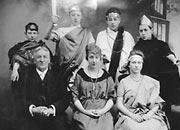
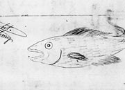
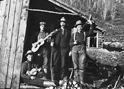
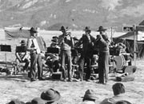
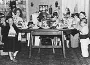
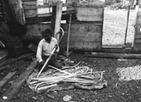
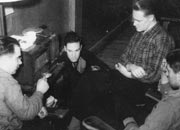

The Yukon has always had a rich cultural life. First Nations people have a long tradition of dancing, singing, drumming and storytelling. At the turn of the 20th century, the territory boasted an opera house, theatres, dance halls and drama clubs. Writers, painters, actors, musicians, dancers and sculptors continue to make their homes here and enrich the territory’s spirit.
For artists and craftspeople, the Yukon’s natural beauty and limitless possibilities are a source of inspiration and delight. Crafts like spinning, weaving and quilting are ways for people to express themselves, and to make their homes comfortable and beautiful. First Nations skills, like tanning, sewing and beadwork, are a continuing tradition and a source of pride.
Tanning hides
The first thing you do is cut off the moose skin. Then you cut a small tree (about five feet from the ground, like a stump) and you sharpen the end. Hang the skin on that, hair side up (so you can cut off the hair). You need to have a really sharp knife to do this. Shave the hair off with a knife until the whole skin is smooth on the hair side.
Gertie Tom
How to tan hides in the native way
Hátthi edhó hande néts'et'á eyet yích'ō ts'è'in dechän udo łek’ets’enèkhel hék’i eyet dechän łek’ets’enèkhel eyet ka, uyé ts’än dats’echu. Hék'i mbra dét’ó eyet yí uyé háchō ch’o háts’et’á. Łúmch’ō uka hùmtl’ro huts’ín háts’et’á.
Gertie Tom
Dùts'ūm Edhó Ts’ètsi Yū Dän K'í
“And everybody has their own style of making snowshoes. I don’t know what it is but they never make two the same.”
Pearl Keenan
1998
Continue to Old style words are just like schoolArts, crafts and culture
(Above) A woman wrings out a moosehide at Albert Isaac’s bush camp on the Big Arm of Kluane Lake, c.1950.
Canadian Museum of Civilization, J-2152
A group in fancy dress, n.d.
YA, MacBride Museum collection, 80/153 #7
Sketch and poem, July 17, 1892.
YA, Israel Albert Lee papers, Coutts collection. MSS-091, f/1
Four musical miners, somewhere in the gold fields, c.1900.
YA, Johns collection, 82/318 #289
Regimental musicians perform at Kluane Lake, July 1942.
YA, Ormbrek collection, 90/52 #97
A Halloween party in Whitehorse, 1951.
YA, Todd collection #9013
Jake Jackson making snowshoes, Teslin, 1941.
YA, Ward Collection #8849
Lou Lundrigan, Bob Kliner, Kevin Hegarty and Pete Clute listen to “Hockey Night in Canada” on CBC radio, April 1945.
YA, Turner collection, 88/16 #61A